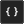

Vous pouvez utiliser le code dans un certain nombre d'endroits dans GameMaker Studio 2 à partir d'objets, de salles, d'instances, et il existe un certain nombre de fonctions intégrées qui vous facilitent la vie lorsque vous programmez avec GML ou Glisser-Déposer. Cependant, il est souvent nécessaire de créer ses propres fonctions pour effectuer une tâche spécifique, ou de condenser une grande partie du code en un morceau plus maniable, ou même de pouvoir réutiliser un bloc de code particulier dans de nombreux endroits différents, C'est pourquoi GameMaker Studio 2 vous donne la possibilité de créer des scripts.
REMARQUE: Bien que cette section traite des scripts, la fenêtre de code dans laquelle vous écrivez vos scripts est la même que pour les événements, le code de création d'une pièce ou d'instance ou les Shaders, et la fonctionnalité décrite ici s'applique à tous.REMARQUE: cette page fait référence à GML pour l'écriture de scripts, mais vous pouvez également créer des scripts à l'aide du glisser-déposer (voir ici ). Peu importe ce que vous utilisez pour coder votre projet, les informations sur cette page sont toujours valables pour l'éditeur lui-même.
Les scripts sont écrits à l'aide du langage de script GML (voir la section Présentation du langage GML pour plus de détails), qui est le langage de programmation GameMaker Studio 2 par GameMaker Studio 2. Une fois que vous vous serez familiarisé avec GameMaker Studio 2 et que vous souhaiterez l'utiliser au maximum, il est conseillé de commencer à apprendre à utiliser cette langue, car elle élargit considérablement vos possibilités lors de la création de jeux. Vous pouvez également écrire des scripts en utilisant Drag and Drop, mais cela nécessite un éditeur différent et est discuté dans la section du manuel pour les scripts d'action.
Un script (comme toute fonction intégrée) peut prendre différentes variables d'entrée, avec des valeurs réelles, de chaînes, booléennes et spéciales comme all ou noone étant acceptées, ces variables d'entrée sont généralement appelées arguments, bien qu'elles soient souvent appelées paramètres. Pour exécuter un script à partir d'un objet ou d'une ligne de temps, vous utilisez le nom du script comme s'il s'agissait d'une fonction ou en utilisant la fonction GML script_execute. Vous pouvez nommer le script en cliquant avec le bouton droit de la souris  dans l'arborescence des ressources et en sélectionnant Renommer, mais notez que le nom du script doit être conforme aux règles de script pour les fonctions, ils doivent donc commencer par une lettre et contenir uniquement des lettres, des chiffres ou le symbole "_".
dans l'arborescence des ressources et en sélectionnant Renommer, mais notez que le nom du script doit être conforme aux règles de script pour les fonctions, ils doivent donc commencer par une lettre et contenir uniquement des lettres, des chiffres ou le symbole "_".
Comme mentionné ci-dessus, vous pouvez passer un certain nombre d'arguments à un script (16 au total), et il va les utiliser pour effectuer la tâche pour laquelle vous l'avez écrit. Pour mieux comprendre cela, prenez, par exemple, une action (ou un code en GML) et réfléchissez à son fonctionnement... vous le placez dans un événement et spécifiez un certain nombre de paramètres pour que votre instance fasse quelque chose. Les scripts sont exactement les mêmes, la seule différence étant que vous les écrivez. Vous pouvez non seulement transmettre des arguments dans un script, mais vous pouvez également demander à un script de renvoyer une valeur return mot-clé), vous pouvez donc les utiliser pour construire des méthodes de calcul (méthodes mathématiques) ou redonner un identifiant d'instance après une détection de collision complexe ou un nombre quelconque de choses. Notez toutefois que l' utilisation de la fonction de retour met fin au script et qu'aucun code ne sera utilisé après son utilisation, ce qui signifie qu'il faut réfléchir à la structure de vos scripts.
Lorsque vous créez une ressource pour la première fois, la fenêtre de l'éditeur de script s'ouvre avec les options suivantes:
L'éditeur de script s'ouvre dans une fenêtre avec des onglets en haut pour vous permettre d'avoir plusieurs scripts dans une seule fenêtre (bien que ce comportement puisse être modifié à partir des Préférences pour donner une nouvelle fenêtre à chaque script). Vous pouvez cliquer
sur un script, puis faites-le glisser pour réorganiser les onglets, ou si vous préférez, vous pouvez le retirer de la fenêtre actuelle et le placer sur l'espace de travail pour créer une nouvelle fenêtre pour ce script (ou l'ajouter à une fenêtre différente ), et vous pouvez également agrandir l'éditeur de script pour créer un nouvel espace de travail. Si vous faites glisser un onglet de script hors de la fenêtre IDE, un nouvel IDE sera créé pour contenir cette ressource de script, et il pourra être utilisé comme vous le feriez dans la fenêtre principale.
Notez que si vous éditez du code à partir d'un événement objet dans l'éditeur de script et que vous avez agrandi l'éditeur de script ou que vous l'avez placé dans une fenêtre ou un espace de travail séparé, cliquez avec le bouton droit de la souris
menu de l'éditeur aura quelques options supplémentaires:
- Restaurer vers l'espace de travail: l'éditeur de script est exclu d'un état d'espace de travail maximisé et est de nouveau chaîné avec l'objet dans l'espace de travail.
- Aller à l'objet: Cela vous mènera à l'espace de travail sur lequel l'objet avec le code est et se concentrer sur l'objet.
- Ajouter / Ouvrir un événement: Cela vous permet d'ajouter un nouvel événement à l'objet auquel le script actuel appartient, et ouvrir un nouvel onglet de code dans l'éditeur de script pour l'événement ajouté. Si l'événement sélectionné contient déjà du code, il sera ouvert dans un nouvel onglet.
Pour plus d'informations sur le reste du clic droit
Le Gutter est utilisé pour afficher les numéros de ligne de votre code et également pour transmettre certaines informations spécifiques. Plus important encore, si vous faites des erreurs ou que vous ne GameMaker Studio 2 pas le code correctement, l' GameMaker Studio 2 vous informera du problème en signalant la ligne de code qui provoque le problème avec un point d'exclamation rouge
. Vous pouvez ensuite passer la souris sur le symbole pour obtenir une brève description du problème:
La gouttière marquera également toute ligne du script auquel un point d'arrêt a été ajouté. Un point d'arrêt est simplement une place dans le script où vous voulez que le module de débogage suspende l'exécution de votre jeu quand il est atteint. Vous pouvez basculer un point d'arrêt à partir de n'importe quelle ligne de n'importe quel événement de script ou d'objet en appuyant sur " f9 " ou en utilisant le clic droit
Enfin, la gouttière montrera également tous les éléments mis en signet aussi. Pour marquer une ligne de code, maintenez simplement enfoncé
/
+
+ Nombre (de 0 à 9), et cela vous permettra de revenir à cette ligne de code de n'importe où dans l'EDI simplement en utilisant
En travaillant dans l'éditeur de script, vous pouvez appuyer sur
Ici vous pouvez effectuer une recherche locale pour le mot-clé que vous avez entré et une fois que vous avez entré votre terme de recherche, vous pouvez ensuite utiliser les flèches situées en haut à droite de la fenêtre de recherche pour passer d'un terme trouvé au suivant. Vous pouvez changer la façon dont l'opération de recherche est effectuée en basculant les boutons suivants:
 Mot entier uniquement: lorsque vous basculez ceci, la fonction de recherche ne mettra en évidence que les chaînes qui correspondent à la chaîne d'entrée entière. Par exemple, avec elle hors d' une recherche « aléatoire » sera affiché tous les mots qui contiennent cette chaîne - comme irandom(), ou randomise() - en le basculant sur on montrerait seulement la fonction random(). Case Sensitive: lorsque cette option est activée, vous GameMaker Studio 2 à GameMaker Studio 2 de vérifier non seulement le contenu de la chaîne de recherche, mais également le cas. Par exemple, si vous avez un sprite appelé « spr_Dog » et faire une recherche pour « chien » avec cette bascule hors tension, puis la chaîne de sprite sera mis en évidence, si la bascule est alors il ne sera pas puisque « Dog » est pas plus longtemps considéré comme le "chien". Si vous avez ouvert la fenêtre de recherche en utilisant
pour l'ouvrir. Une fois ouvert, vous pouvez ensuite entrer une chaîne qui sera utilisée pour remplacer une chaîne de recherche donnée, en utilisant les boutons suivants pour effectuer l'action:
Remplacer Suivant: Cliquer sur ceci remplacera la chaîne de recherche suivante trouvée dans le script avec la chaîne de remplacement donnée. Notez que le terme "suivant" est considéré comme le suivant après la position actuelle du curseur, et vous pouvez passer à différents en utilisant les boutons fléchés en haut à droite de la fenêtre de recherche. Remplacer tout: Cliquer sur ceci remplacera tous les exemples de la chaîne de recherche dans le script en utilisant la chaîne de remplacement donnée. Notez que si vous voulez effectuer une recherche globale (par exemple: recherchez l'ensemble du projet plutôt que le script en cours), vous pouvez appuyer sur
L'éditeur de script principal est l'endroit où vous allez écrire tout votre code pour créer le script ou remplir un événement objet. Les scripts et les événements de code sont écrits en suivant les règles générales de la syntaxe GML (voir la section Présentation du langage GML pour plus de détails), et vous pouvez obtenir de l'aide en écrivant vos scripts depuis la fenêtre de saisie automatique:
Cette fenêtre apparaîtra pendant que vous écrivez votre code (normalement après une légère pause, mais cela peut être défini dans les préférences ) et vous donnera une sélection de réponses "best-fit" dans l'ordre alphabétique. En utilisant l'éditeur de code, vous pouvez cliquer
puis clique
Il est à noter que vous pouvez commenter votre code de différentes manières. Commenter votre code est très important pour maintenir la productivité car il garde les choses claires et sépare les sections de code de telle sorte qu'il est évident que chaque partie fait et pourquoi elle est là. Cela signifie également que si vous travaillez dans une équipe, vous pouvez laisser des notes pour les autres membres et qu'ils sauront exactement ce que vous avez fait ou à quoi correspond une section spécifique du code. Même si vous êtes un développeur solo, il est important de laisser des commentaires pour votre code, surtout si vous devez quitter le projet et y revenir plus tard.
Commenter votre code est simple, car il vous suffit d'utiliser " // "avant toute ligne de texte ou vous pouvez commenter des paragraphes entiers en utilisant" /* text here */ Il existe même deux raccourcis clavier pour commenter et décommenter les lignes de code sélectionnées:
Les scripts peuvent également avoir certains commentaires de style JSDoc ajoutés de sorte que lorsque vous les utilisez dans votre code, ils s'affichent automatiquement avec leurs arguments et autres détails. vous pouvez en savoir plus à ce sujet dans la section Commentaires sur les scripts JSDoc pour plus d'informations. Il est important de noter que les commentaires de script peuvent être formatés et analysés par la liste des tâches afin que les éléments puissent être automatiquement ajoutés à la liste (pour plus d'informations, voir ici ).
En dehors des commentaires, vous pouvez également utiliser spécial #region tags pour marquer une section de code pour le pliage de code. Comment cela fonctionne est que vous ajoutez un #region tag (avec tout texte de commentaire) en haut d'une section de code, puis ajoutez un correspondant #endregion étiqueter en bas de la section et ensuite vous pouvez "plier" le code, c'est-à-dire: le masquer pour que vous puissiez réduire le nombre de lignes de code visibles dans l'éditeur à tout moment:
Le code actuel ressemble à ceci:
#region This is an example region
width = sprite_get_width(sprite);
height = sprite_get_height(sprite);
xoff = sprite_get_xoffset(sprite);
yoff = sprite_get_yoffset(sprite);
#endregion Further comment here if requiredComme vous avez pu le remarquer, certaines parties du texte du script sont coloriées. L'éditeur de script "connaît" les objets existants, les variables et fonctions intégrées, etc. Le codage couleur aide beaucoup à éviter les erreurs, comme vous pouvez le voir immédiatement si vous avez mal orthographié un nom ou utilisé un mot-clé comme variable, ou si vous avez une erreur de syntaxe. Cependant, si vous n'aimez pas le code couleur, vous pouvez l'activer ou le désactiver dans les préférences (vous pouvez également utiliser F10) et personnaliser les couleurs utilisées.
Vous pouvez faire un clic droit
Outre les fonctions habituelles que vous vous attendez à couper, copier et coller des lignes de code, vous avez également la possibilité de commenter ou de décommenter un texte sélectionné, d'ajouter ou de supprimer des retraits, et de diviser la fenêtre de code en 1, 2 ou 3 volets (notez que les options relatives à #regions ne sera pas disponible si vous n'en avez pas défini dans le code en cours d'édition). Ces dernières options diviseront la fenêtre en différentes parties où vous pourrez ensuite faire glisser un script et l'afficher aux côtés des autres pour les comparer et les modifier.
Ceci est exceptionnellement utile pour comparer deux scripts ou pour visualiser des scripts connectés en même temps, sans avoir besoin d'une autre fenêtre ou d'avoir à changer constamment entre les onglets. Les autres options de ce menu sont de basculer un point d'arrêt à utiliser avec le débogueur et de convertir le code GML en DnD™ ou vice versa. Notez que si vous convertissez du code en DnD™, il ne créera pas d' actions individuelles pour chaque ligne de code, mais utilisera une action de code unique pour contenir tout ce qui était précédemment dans l'événement ou le script.
Un autre outil très pratique que vous avez à votre disposition lors de l'édition de vos scripts est l'utilisation des extraits de code. En appuyant F4 vous allez ouvrir la fenêtre contextuelle de l'extrait de code, qui vous permet de sélectionner l'une des méthodes de code les plus couramment utilisées. Vous pouvez également définir vos propres extraits de code si vous le souhaitez, en les enregistrant dans le répertoire dans lequel vous avez installé GameMaker Studio 2 à l'emplacement suivant: \GameMaker Studio 2\TextEditor\snippets.txt. Vous pouvez éditer ce fichier avec n'importe quel éditeur de texte en suivant ces règles:
- Chaque extrait est sur une ligne distincte (il ne doit pas y avoir de lignes vides).
- Chaque extrait commence par le nom de l'extrait (qui est ce qui est affiché dans le menu) suivi du signe deux-points (:) suivi de l'extrait de code réel.
- Utilisez # pour un retour à la ligne et placez le texte devant être sélectionné en premier entre | symboles
Reportez-vous aux exemples déjà présents dans le fichier pour voir comment il est configuré en suivant les règles ci-dessus. Il est fortement recommandé de faire une sauvegarde avant de commencer à modifier quoi que ce soit et de sauvegarder les modifications apportées au fichier. Comme si vous deviez réinstaller le programme ou le mettre à jour en rétablissant les modifications que vous avez effectuées, vous pouvez utiliser la sauvegarde pour les rétablir.
La barre d'information au bas de l'EDI vous montre le numéro de ligne actuel et la position le long de la ligne. C'est également là que vous pouvez voir l'aide de code, qui est une ligne de texte qui montre la fonction que vous êtes en train d'éditer avec les arguments dont elle a besoin. Lorsque vous remplissez la fonction dans l'éditeur, les arguments seront mis en évidence pour vous montrer celui que vous êtes en train d'éditer. Si vous avez utilisé les commentaires de script JSDoc dans un script personnalisé, les informations que vous avez fournies s'afficheront également ici.